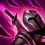
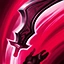
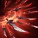

Katarina

Decisiva en su juicio y letal en combate, Katarina es una asesina noxiana del más alto calibre. Como la hija mayor del legendario General Du Couteau, ella hizo que reconocieran sus talentos con agiles muertes a sus enemigos desprevenidos. Su feroz ambición la ha llevado a buscar blancos fuertemente protegidos aunque tenga que poner en riesgo a sus aliados; sin embargo, sin importar la misión, Katarina no dudará al ejecutar su deber en medio de un torbellino de dagas.
| P | Q | W | E | R |
|---|---|---|---|---|
|  |  |
 |  |
 |
| ANSIA | HOJA REBOTANTE | PREPARACIÓN | VELOCIDAD DEL RAYO | LOTO MORTAL |
Katarina es fuerte contra:
- Brand
- Karthus
- Orianna
- Yasuo